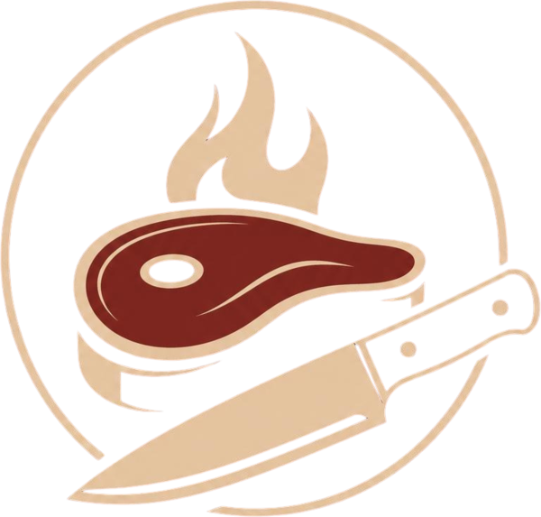

Você está sem conexão.
As páginas já abertas podem continuar disponíveis. Ações que precisam do servidor serão sincronizadas quando a internet voltar.
Ir para o início
As páginas já abertas podem continuar disponíveis. Ações que precisam do servidor serão sincronizadas quando a internet voltar.
Ir para o início